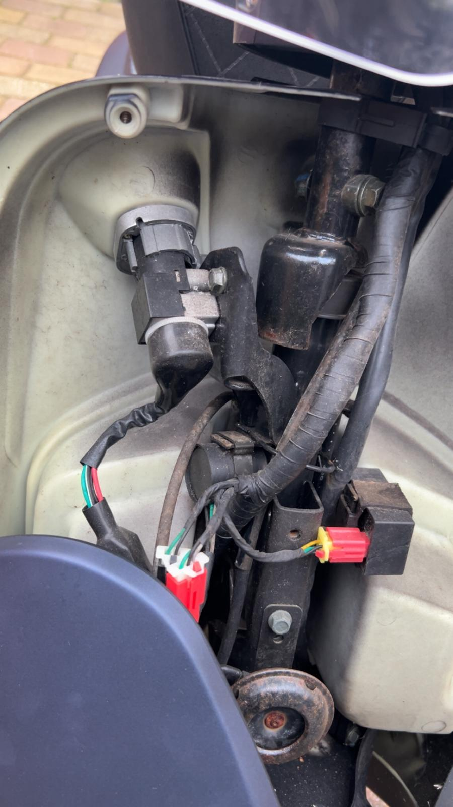

Koplamp vervangen

De koplamp bevindt zich aan de voorkant van het stuur en zorgt voor zicht tijdens het rijden in het donker. Om de koplamp te vervangen, moet je toegang krijgen tot de achterkant van de koplampunit. Maak de elektrische stekker los en verwijder de bevestigingen van de unit. Plaats de nieuwe koplamp en sluit de bedrading opnieuw aan. Controleer na montage of het dimlicht en grootlicht goed werken.
De koplamp bevindt zich aan de voorkant van de scooter. Maak de stekker en bevestigingen los en verwijder de oude unit. Plaats de nieuwe koplamp en controleer of het dimlicht en grootlicht werken.